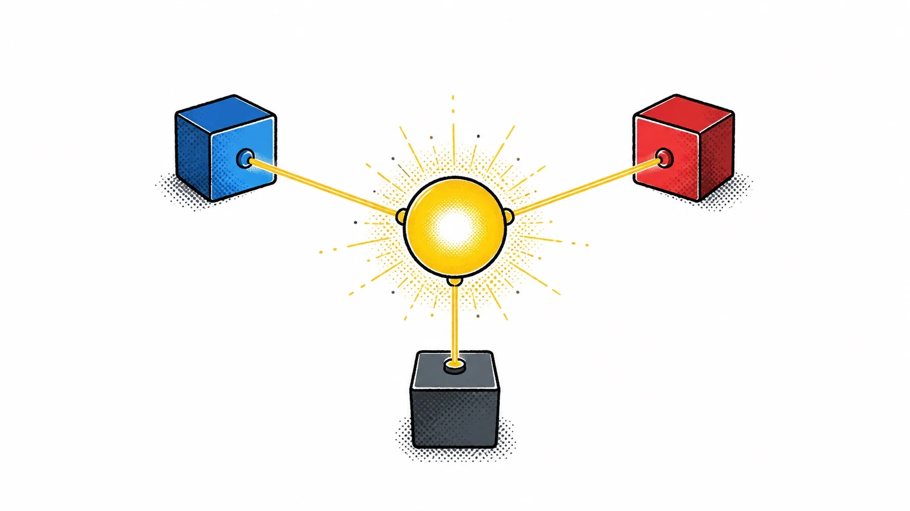

Chapter 09 · Beyond One Component
Sharing State
Props cover parent-to-child. For anything wider — two siblings, a whole app, a subtree that shouldn't need threading — Svelte 5 gives you three tools, and they're not interchangeable: runes modules, stores, and context.
Runes modules — the default
Runes aren't limited to .svelte files. A
.svelte.js (or .svelte.ts) file can use
$state/$derived too — that's how you build a shared model
without a component wrapping it.
// cart.svelte.js
function createCart() {
let items = $state([]);
let total = $derived.by(() => items.reduce((s, i) => s + i.price, 0));
return {
get items() { return items; },
get total() { return total; },
add(item) { items.push(item); }
};
}
export const cart = createCart();// AnyComponent.svelte
import { cart } from './cart.svelte.js';
Import cart in any component and it's the same live object — mutate it
from one, read it from another, no provider needed.
You can't export a reassignable $state directly
Svelte compiles file-by-file, so export let count = $state(0) at a module's top
level doesn't propagate reassignment (count = 5) to importers — they'd keep the
original value. Export an object with mutable properties (as above) or export
getter/setter functions instead. Mutation, not reassignment, is what travels across the
module boundary.
Stores — still around, for a reason
Stores (writable, readable,
derived from svelte/store) predate runes, and runes cover most
of what stores used to be reached for. They're still the right tool for
async data streams with manual control — a WebSocket feed, an RxJS observable, anything where
you want to call .set()/.update() from outside on your own
schedule.
import { writable } from 'svelte/store';
export const online = writable(false);<!-- any component -->
<p>{$online ? 'connected' : 'offline'}</p>The $ prefix auto-subscribes at component init and unsubscribes at
teardown — declare the store reference at the component's top level, not inside a conditional or function.
Context — passing down without prop-drilling
Context shares a value with every descendant of a component, without threading it through every layer as a prop. It's scoped to that component subtree — not global — which also makes it server-render-safe per request (not something this book's client-side apps need to worry about, but it's why context exists as a separate concept from a module-level singleton).
<!-- Layout.svelte -->
<script>
import { setContext } from 'svelte';
let theme = $state({ dark: false });
setContext('theme', theme);
</script><!-- any descendant, any depth -->
<script>
import { getContext } from 'svelte';
const theme = getContext('theme');
</script>
<button onclick={() => theme.dark = !theme.dark}>toggle</button>Mutate the context value, don't reassign it
If a descendant does theme = { dark: true } instead of
theme.dark = true, it breaks the link — that component now points at a new object the
provider never sees. Set properties on the shared object; don't replace it.

A bold editorial zine illustration: a single glowing hub node at the center with three thin glowing threads radiating outward to three small satellite boxes, like a subway map or a simple constellation — evoking one shared piece of state read by several components at once. Flat vector style, hand-inked outlines, halftone dot shading, strict palette of yellow, blue, red and charcoal gray only on white, generous whitespace, no text baked in. Target ~1280x720px, 16:9 landscape; compose for a small on-page figure with the subject centred and safe margins — it is letterboxed into a 16:9 box, so keep nothing important near the edges.
Generate with your image agent, then drop the file here.
Try it
Build the cart.svelte.js module above, import it into two unrelated components on
the same page, and add an item from one. Watch the total update in the other with no prop, no event, no
store — just a shared reactive object.
I reach for context less than I expect to. Most "I need to share this everywhere" problems are actually "I need one importable module" problems. Save context for values that are genuinely scoped to a subtree — a theme, a form's validation state, a wizard's current step — not as a global-state shortcut.